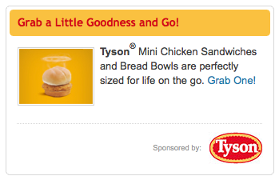

SNI Ad Operations: A primer for developers

Who Am I (and why am I talking about ads?)
- Background:
- Designer
- Developer
- Ad Ops Mgr
- FEE Mgr
-
Where do FEE and Ad Ops overlap?
When a page loads, it is pulling in markup from the edge server: doc head with style and script calls, mdManager data, major and minor content containers, omniture function calls and of course ad function calls.
What does the ad operations do?
Ad Operations is the technical end of Ad Sales. They have teams that work on pricing out Scripps sites' content, tracking how much inventory there is, how much is sold and still available... teams that take in data on what ads served and issue billing to the advertisers so everyone gets paid... and a team that sets up the ads themselves, handles ad troubleshooting, ad integration and internal tools to facilitate all the above processes.
- Pricing & Inventory:
Want to know how much we made on Foodnetwork.com last week on advertising? How about analyzing the revenue impact felt from the tweaks to photogallery or video player products your team made last month? These guys could help.
- Billing:
Every sales team member submits reporting for each of their advertisers that shows how many ads @ what rate have served. Billing turns this around and issues invoices to the advertisers as well as balancing the books and ensuring compliance with financial regulations. Keeps us out of prison...
- Traffic:
This team has the most overlap with our technical teams. They review thousands of ad creatives a week, turning away problematic ad creative, analyzing third party responses for performance and content. They set up ads against targeting parameters, priority, timing (can schedule down to the minute, do day parting, recurring timeframes, etc.) They also do adserver integrations, ie. adding javascript libraries, function calls and containers for ads, targeting configuration, etc. When we have a new site, a partner site, or a redesign there's typically a lot of work in this area to do.
What software is used?
- Sharepoint
- Salesforce.com
- Solbright
- Doubleclick:
this is the ad server itself. Scripps uses Dart Enterprise, which means that Scripps owns the servers and the data but in turn must maintain the servers and the database. Enterprise is hugely configurable and very powerful, and has allowed Scripps to do things with its sites and the adserver that most ad server vendors would not accommodate.
- Ad Marvel:
the mobile platform ad serving system. Serves to the food mobile site and to our iOS and Android apps.
- Charles HTTP Proxy
- Firebug
- Mockingbird:
In-house tool used to build, test, hand off for approval, hand off for ad serving.
- Preroll Generator:
Used to create the markup we serve to Snap and legacy players. Takes in params like video file location, tracking pixels, clicktags, bigbox sync ad call parameters, and generates a snippet of markup that Snap ingests. Snap then calls the preroll asset, triggers the tracking at appropriate events, and calls Doubleclick for the sync bigbox, inserting it into the bigbox container on the page as an iframe.
Handy links:
Lifecycle of ad:
- Pricing & Inventory + Ad Sales Marketing
- Sales Team (execs, managers, planners, assistants)
- Traffic Team (set up and serve the ad)
- Site staff (reporting ad behavior/content issues)
- Sales Team / Ad ops (optimization/troubleshooting/reporting)
- Billing $$$
Pieces and Parts – Adserving Infrastructure
- Ad Library
Each site ingests javascript that defines HOW the Scripps ads function. We'll use HGTV as an example.
script src="http://www.sndimg.com/common/js/sni-core/sni-core.2.0.js" type="text/javascript" script type="text/javascript" src="http://hgtv.sndimg.com/webhgtv/hg20/js/sni-hgtv.2.0.js"
- Ad Restrictions
Each site ingests a script that allows the ad operations team to prevent the function calls for any given ad on the pgae from firing. This gives them control to micromanage any scope of content on a site without editorial or developer intervention. For example, they might reduce 5 ad calls to a single one on the Dream Home landing page during the winner reveal period of time, in order to reduce the hit on the adserver or to speed up load time during a critical period. Another example would be to turn on and off a leaderboard ad on section fronts during changes in inventory demand.
script type="text/javascript" src="http://www.sndimg.com/common/adimages/networkads/hgtv/prod/adRestriction.js"
- MdManager
MdManager is the object that carries 'aboutness' information for a given page. Among other things Omniture and the Ad Server use this data.
var mdManager = new MetaDataManager(); mdManager.addParameter("Url", "/hgtv/home/0,1000137,,00.html"); mdManager.addParameter("Role", ""); mdManager.addParameter("Title", "HGTV - Decorating, Outdoor Rooms, Landscaping Ideas, Kitchen and Bathroom Design"); mdManager.addParameter("Keywords", ""); mdManager.addParameter("Site", "HGTV"); mdManager.addParameter("SctnId", "32656"); mdManager.addParameter("DetailId", "32656"); mdManager.addParameter("PageNumber", "1"); mdManager.addParameter("AdKey1", ""); mdManager.addParameter("AdKey2", ""); mdManager.addParameter("Channel", ""); mdManager.addParameter("TalentName", ""); mdManager.addParameter("Source", ""); mdManager.addParameter("ContentTag1", ""); mdManager.addParameter("ContentTag2", ""); mdManager.addParameter("SctnName", "HOME"); mdManager.addParameter("SctnNameLineage", "HOME,HGTV"); mdManager.addParameter("Show_Abbr", ""); mdManager.addParameter("CategoryDspName", "HOME"); mdManager.addParameter("Classification", "HOME,HGTV"); mdManager.addParameter("SctnDspName", "HOME"); mdManager.addParameter("Sponsorship", ""); mdManager.addParameter("Type", "SECTION"); mdManager.addParameter("UniqueId", "HGTV-SECTION-32656-1");
Ad calls
- Leaderboard
LeaderboardAd(1);
- Pushdown/Brandscape
- Bigbox (5, 6, 7)
BigboxAd(5);
- Multilogo (1-4)

MultiLogoAd('LOGO',4); - 300x150 (sponsorship module)

BigboxAd300x150();
- Superstitial 2
SuperstitialAd(2);
- Superstitial 3
SuperstitialAd(3);
Edge Cases
- Content integration
- Ad related markup containers
Troubleshooting
- Using Charles/Firebug to diagnose
- Ads that obscure content or navigation
- Wrong sized ads for ad spot
- Missing ads
- page is missing function call
- ad response is present, but nothing renders
- valid ad request, invalid or empty adserver response
- script time outs associated with ad served assets
Who to contact and how
- Inappropriate content of ads: Ad Operations
- Broken ads/misbehaving ads or tracking pixels: Ad Operations
- Missing ad function calls from text elements: Digital Production managers